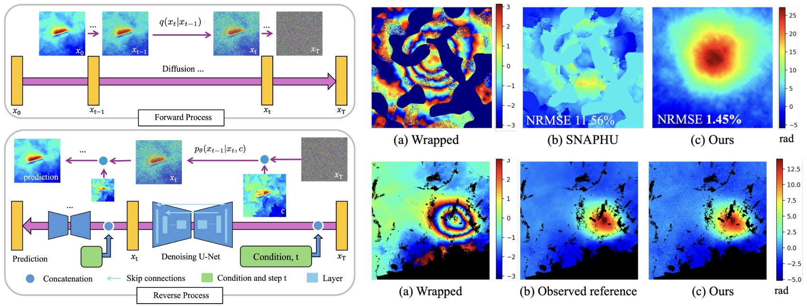
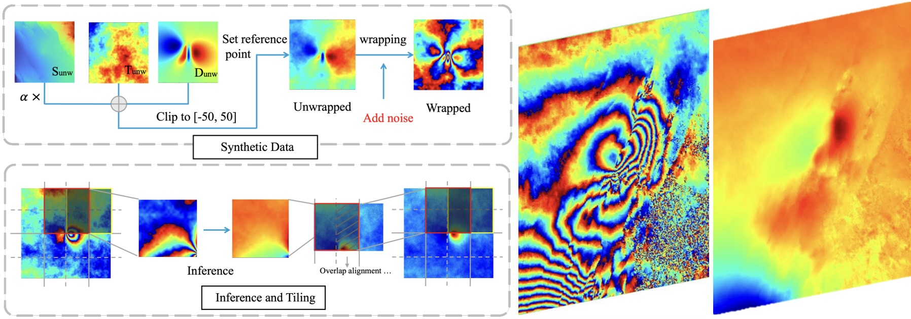

AI-Based Phase Unwrapping for InSAR
Combining InSAR Physics with AI for Faster, More Reliable Phase Unwrapping


Aim
Phase unwrapping is a fundamental problem in Interferometric Synthetic Aperture Radar (InSAR) data processing, underpinning geophysical applications such as deformation monitoring and hazard assessment. Its reliability is often limited by noise and decorrelation in radar acquisitions, making accurate reconstruction of deformation signals challenging. This project aims to combine the physical principles and unique characteristics of InSAR data with recent advances in AI to deliver faster and more reliable phase unwrapping than traditional techniques.
Methods
[PDF]

UnwrapDiff is a denoising diffusion probabilistic model (DDPM)-based framework for InSAR phase unwrapping, in which the output of the traditional minimum cost flow algorithm (SNAPHU) is incorporated as conditional guidance. A synthetic dataset incorporating atmospheric effects and diverse noise patterns, representative of realistic InSAR observations, is constructed to evaluate robustness. The model leverages the conditional prior while reducing the effect of diverse noise patterns, achieving on average a 10.11% reduction in NRMSE compared to SNAPHU and better reconstruction in difficult cases such as dyke intrusions.
[PDF]

This work presents a diffusion-model-based phase unwrapping framework developed to process large-scale interferograms and to address phase discontinuities caused by deformation. In earthquake-related deformation, shallow sources can generate surface-breaking faults and abrupt displacement discontinuities that disrupt phase continuity and often cause conventional algorithms to fail. By leveraging a diffusion model architecture, the method recovers physically consistent unwrapped phase fields even in the presence of fault-related phase jumps, while scaling well to the large, spatially heterogeneous interferograms encountered in real-world data.
Downloads
Publications
- UnwrapDiff: A Conditional Diffusion Model for InSAR Phase Unwrapping. Y Song, J Biggs, A Achim, R Popescu, S Orrego, and N Anantrasirichai. 2025 [PDF]
- An InSAR Phase Unwrapping Framework for Large-scale and Complex Events. Y Song, J Biggs, A Achim, R Popescu, S Orrego, and N Anantrasirichai. 2026 [PDF]
Related research
SAR and remote sensing at VI-Lab
- Despeckling SAR Images of the Sea Surface
- Solving SAR Imaging Inverse Problems Using Nonconvex Regularization
- Artificial intelligence in the creative industries: A review. N Anantrasirichai and D R Bull, Artif Intell Rev 55, 2022